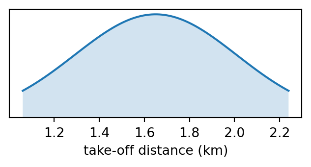
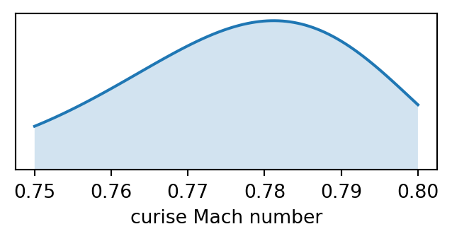

from openap.kinematic import WRAP
wrap = WRAP(ac="A320")
params = wrap.takeoff_speed()
params = wrap.takeoff_distance()
params = wrap.takeoff_acceleration()
params = wrap.initclimb_vcas()
params = wrap.initclimb_vs()
params = wrap.climb_range()
params = wrap.climb_const_vcas()
params = wrap.climb_const_mach()
params = wrap.climb_cross_alt_concas()
params = wrap.climb_cross_alt_conmach()
params = wrap.climb_vs_pre_concas()
params = wrap.climb_vs_concas()
params = wrap.climb_vs_conmach()
params = wrap.cruise_range()
params = wrap.cruise_alt()
params = wrap.cruise_init_alt()
params = wrap.cruise_mach()
params = wrap.descent_range()
params = wrap.descent_const_mach()
params = wrap.descent_const_vcas()
params = wrap.descent_cross_alt_conmach()
params = wrap.descent_cross_alt_concas()
params = wrap.descent_vs_conmach()
params = wrap.descent_vs_concas()
params = wrap.descent_vs_post_concas()
params = wrap.finalapp_vcas()
params = wrap.finalapp_vs()
params = wrap.landing_speed()
params = wrap.landing_distance()
params = wrap.landing_acceleration()3 🌯 Kinematic models
OpenAP includes a set of kinematic models that describe speeds, vertical rates, altitudes, distance, and other parameters during different phases of a flight. The kinematic model, named WRAP, is constructed based on the method from the paper: Sun et al. (2019)
3.1 Parametric models
Following is a list of functions that can be used to access parameters at different phases of flight, for example, flight type code A320:
3.2 Example, normal distribution
Let’s take an example of the take-off distance, which is obtained using the takeoff_distance() function:
wrap.takeoff_distance(){'default': 1.65,
'minimum': 1.06,
'maximum': 2.24,
'statmodel': 'norm',
'statmodel_params': [1.65, 0.36]}Here, we can see that the mean (default) value is 1.65 km, while the minimum and maximum take-off distances are 1.06 km and 2.24 km. The parameter can be described with a normal distribution, with a mean of 1.65 and a standard deviation of 0.36.
import numpy as np
import matplotlib.pyplot as plt
from scipy import stats
params = wrap.takeoff_distance()
mean, std = params["statmodel_params"]
x = np.linspace(params["minimum"], params["maximum"], 100)
y = stats.norm.pdf(x, mean, std)
plt.figure(figsize=(4, 1.5))
plt.plot(x, y)
plt.fill_between(x, 0, y, alpha=0.2)
plt.ylim(0)
plt.xlabel("take-off distance (km)")
plt.gca().axes.get_yaxis().set_visible(False)
plt.show()
3.3 Example, other distributions
We can take another example where the distribution is not a normal distribution, such as Mach number during the cruise:
params = wrap.cruise_mach()
display(params)
x = np.linspace(params["minimum"], params["maximum"], 100)
model_class = getattr(stats, params["statmodel"])
model = model_class(*params["statmodel_params"])
y = model.pdf(x)
plt.figure(figsize=(4, 1.5))
plt.plot(x, y)
plt.fill_between(x, 0, y, alpha=0.2)
plt.ylim(0)
plt.xlabel("curise Mach number")
plt.gca().axes.get_yaxis().set_visible(False)
plt.show(){'default': 0.78,
'minimum': 0.75,
'maximum': 0.8,
'statmodel': 'beta',
'statmodel_params': [17.82, 5.05, 0.62, 0.2]}
The plot shows a bete distribution. However, in this example code, we do not need to specify how the model should be constructed. The following code does the trick:
model_class = getattr(stats, params["statmodel"])
model = model_class(*params["statmodel_params"])With this code, we can automatically generate a parametric model using parameters from the wrap.cruise_mach() function.
3.4 Units
The units of kinematic models are all in SI units, hence:
- distance: in
km - altitude: in
km - speed: in
m/s - acceleration: in
m^2/s